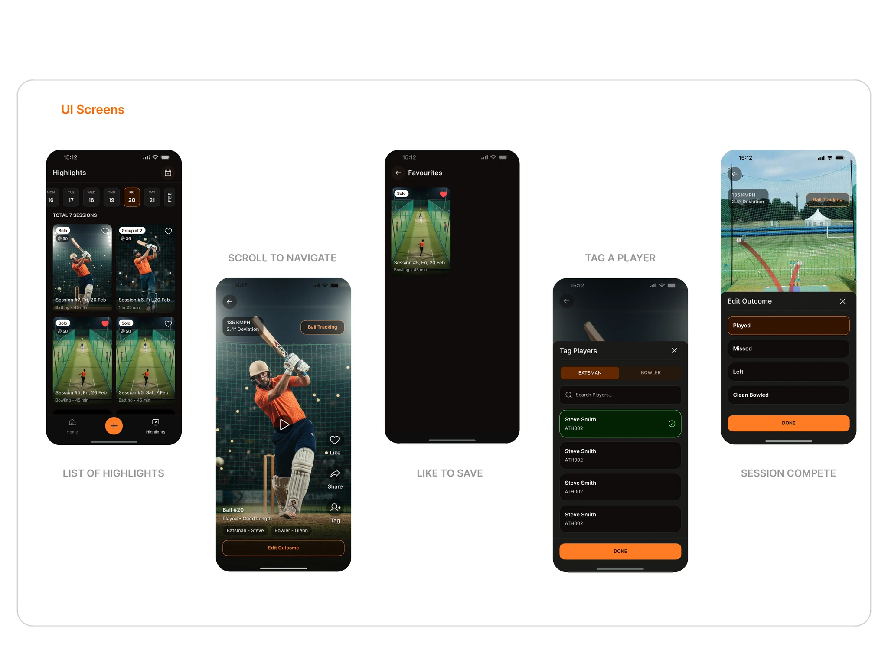

From a loose brief to a complete journey.
Crickeroo helps players review batting, bowling and all-round performance through session stats, highlights and visual maps.
I was given an early wireframe and a KPI document. The user flow, feature logic and screen relationships still needed to be defined. I mapped the journey from session setup through recording and review, then designed the mobile UI and prepared it for developer handoff.
Make recording practical during play, then present the resulting data with the familiar visual language of a televised cricket match.
Players needed a usable feedback loop.
Early-career players aiming to progress did not have a clear way to see and analyse their own performance with the depth they associate with professional cricket.
The initial Australian audience includes club players. Stakeholders helped gather input from Australian clubs. The early concept had performance metrics, but the journey from recording a session to reviewing useful patterns still needed to be defined.
Log without stopping play
A recording flow with repeated screens and taps would be difficult to use between deliveries.
Translate numbers into cricket
Players needed to read patterns in line, length and scoring areas, not just inspect raw totals.
Make sessions worth revisiting
Highlights and saved moments had to connect back to the player’s analysis.
I defined the product logic before the screens.
Working as the solo designer with stakeholders and developers, I mapped the flow from entry through session completion and analysis.
That mapping surfaced use cases the initial brief had not resolved. I walked stakeholders through the implications, made the interaction decisions explicit, then built the high-fidelity screens and design system for handoff.
Designing for the moments around each ball.
The central constraint was speed: the app needed to work in one hand, outdoors and between deliveries.
I made it easier for returning players to start from a previous session so they would not have to enter the same setup details again and again.
I chose a compact quick-input card that keeps the recording context visible, avoiding repeated screen changes during a net session.
I adapted the visual language of major cricket broadcasts so developing players could see their own data in a familiar format. Pitch maps, shot zones and colour cues help surface patterns.
A denser input card asks players to learn one layout. In exchange, standard logging can happen without repeated page transitions. Whether this is faster in practice still needs player testing.
A journey from setup to insight.
These are the designed screens from the existing project. They show the flow and interaction model; they do not by themselves prove that the product launched.

Record in context
Quick input avoids a chain of modal screens while a player is actively practising.
Review in cricket language
Pitch and shot maps convert recorded events into spatial patterns players already recognise.

The design is ready; player evidence is next.
The documented output includes the end-to-end flow, interaction logic, mobile screens and design system prepared for developers.
Stakeholders have gathered input from Australian club players, and the product is now being tested. Feedback and results have not yet been shared, so this page makes no claim about launch, adoption or performance improvement.
The most useful next signals are whether players can set up a repeat session without re-entering details, log a delivery quickly during practice, understand the maps and find a past highlight.
What I would take forward.
The flow work made unresolved product decisions visible early. Player testing should now challenge the assumptions behind repeat setup, quick input and map readability.
Onboarding was completed late in the design effort. I would give the first minute of the app its own design and test cycle so new players understand why recording a session is worthwhile.
Fast to record, useful to review.
The recording and analysis experience balances speed during practice with enough detail to make the data meaningful later.
Start faster, then confirm
Reusing a previous session avoids repeated setup, but copied details may be outdated. Players still need a clear chance to review them.
Fewer transitions, more to learn
A compact input card reduces navigation between deliveries, but asks first-time users to understand a denser layout. Player testing will show whether that exchange works.
Borrow broadcast language carefully
Broadcast-style maps make analysis feel recognisably cricket, but too many visual cues could obscure the underlying numbers. The maps need to be readable without spectacle doing the explaining.